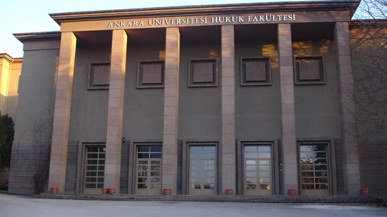

Ankara University
General Information
The foundations of Ankara University, which was established in 1946 with the slogan of "the science sun of the republic", date back to the Republican period. Ankara Law School (1925), Higher Agricultural Institute (1933), Faculty of Language, History and Geography (1935), which was founded by the order of Atatürk, and the Faculty of Political Sciences, which has been training senior managers in the public sector since 1859, formed the basis of Ankara University. Today, Ankara University has 18 faculties, 1 conservatory, 10 vocational schools and 13 institutes.
Campus
The Cebeci campus includes the Faculty of Political Sciences, the Faculty of Communication, the Faculty of Education and the Faculty of Law. In Ankara University Tandoğan Campus, there is the rectorate building with the faculty of engineering, pharmacy, dentistry and science. Tandoğan campus is the greenest campus of Ankara University. Ankara University Faculty of Language, History and Geography was established in 1935 by the order of Atatürk in order to develop our language, history and culture.
Accommodation
Since it is located in the city center, there are many state dormitories around it.
Transportation
Since the campuses of the university are in the city center, transportation is very easy from anywhere.
Address
Ankara Üniversitesi Rektörlüğü, Dögol Caddesi 06100 Beşevler / Ankara / Türkiye